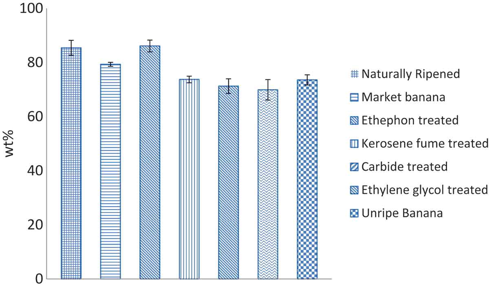

A detailed analysis of banana quality explains that the physical characteristics of bananas, such as their color, size, and shape, greatly influence the initial evaluation of their quality. Bananas ripened naturally tend to have a longer shelf life, as the internal metabolic processes occur without external interference. Bananas with significant blemishes, irregular shapes, or those that are too green or overripe may not meet premium quality standards. A variety of characteristics, including the fruit's appearance, nutritional value, genetic heritage, and environmental development conditions, are taken into account when evaluating the quality of bananas. Understanding these elements helps consumers get the highest-quality bananas, full of flavor, nutrition, and longevity.
By utilizing Artificial Intelligence and Machine Learning to differentiate between the natural and induced ripening of bananas offers a promising avenue for ensuring food safety and quality. Machine learning algorithms can be trained to detect subtle texture differences between naturally and induced bananas based on high-resolution images by using texture analysis. In spectral analysis, the data is trained to differentiate between the two ripening methods. Hyperspectral and multispectral imaging can identify chemical signatures unique to artificial ripening agents. The application equipped with basic AI capabilities might be developed for consumers to upload pictures of bananas.
By utilizing Artificial Intelligence and Machine Learning to differentiate between the natural and induced ripening of bananas offers a promising avenue for ensuring food safety and quality. Machine learning algorithms can be trained to detect subtle texture differences between naturally and induced bananas based on high-resolution images by using texture analysis. In spectral analysis, the data is trained to differentiate between the two ripening methods. Hyperspectral and multispectral imaging can identify chemical signatures unique to artificial ripening agents. The application equipped with basic AI capabilities might be developed for consumers to upload pictures of bananas. The Artificial Intelligence can then analyze the images and give them a probability score regarding the ripening method used. In AI and ML offers immense potential to enhance the detection of induced ripening of bananas, providing a safer food supply and more informed choices for the consumers.